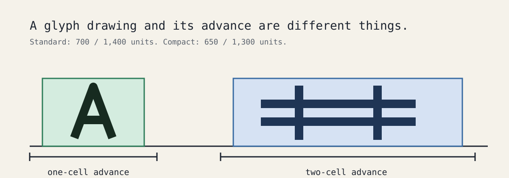

DeparturePixelZh · 0.1.0 · Regular
English, 中文, developer icons, and system emoji
Edit either specimen directly. Text glyphs and developer icons come from the merged font; color emoji intentionally fall back to the platform.
DeparturePixelZh Compact
650 / 1,300 units · about 7.14% tighter
Hello World! MWiIl1 O0 09:41 +12.50%
繁體中文，像素同行。編輯器與終端機。
简体中文，像素同行。编辑器与终端。
，。！？「」『』（）、；：——…
┌───┐ │ A │
😀 ❤️ 👍🏽 🇹🇼
DeparturePixelZh
700 / 1,400 units
Hello World! MWiIl1 O0 09:41 +12.50%
繁體中文，像素同行。編輯器與終端機。
简体中文，像素同行。编辑器与终端。
，。！？「」『』（）、；：——…
┌───┐ │ A │
😀 ❤️ 👍🏽 🇹🇼
Outline versus advance

Compact: TTF · WOFF2
Standard: TTF · WOFF2 · Notices